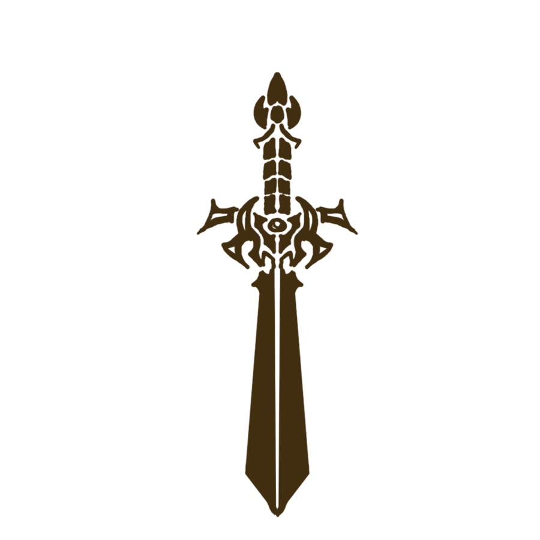

Clases

• Existen rituales especiales para encasillar a las personas en una clase, desbloqueando así todo el potencial. Normalmente se hace cuando el sujeto llega a ser mayor de edad (a tener en cuenta que cada raza difiere en ese dato). Los que lo tienen claro pueden ir entrenando y aprendiendo teoría poco a poco, pero al ser tan duro normalmente no se comienza el entrenamiento de clase hasta que el sujeto ha crecido lo suficiente y esté cerca de la promoción, pues es demasiado duro para los niños.
Físicas
Guerrero
Usuarios de armamento pesado con espada y escudo, especializado en artes de combate cuerpo a cuerpo
defensivo. Son buenos inspirando a sus aliados en combate ya que son una fuerte clase de avanzada.
Arquero
Arqueros precisos, especializados en el cuidado y entendimiento de la naturaleza y su conservación,
suelen llevar pets de combate, en el combate cuerpo a cuerpo atacan con dagas. Tienen habilidades de
tirador (como disparar varias flechas a la vez, que persiguen, con efecto).
• Los ranger nagas: llevan mascotas, su arma es una especie de caña de pescar (un palo atado a media
lanza) y van siempre con una pet (swooping evil).
Berserker
Guerreros brutales especializados en acumular heridas para plasmar toda esa rabia y dolor en la
batalla. Se especializan en hachas o en hachas de dos manos. Se especializan en artes de combate
cuerpo a cuerpo ofensivas. Sus gritos pueden inspirar a los aliados (algunos dirían que incluso son
mágicos).
Cazarrecompensas
Luchadores con armaduras ligeras extremadamente ágiles capaces de correr por las paredes, saltar muy
alto y van armados con una katana en una mano y en la otra una escopeta de vapor a presión.
Van
con sombrero.
Pueden lanzar granadas de vapor o usar artilugios steampunk.
Asesino
Armados con dagas, especialistas en asesinato a sangre fría, evitan el combate directo, aunque
también son bastante infalibles, especialistas en el arte del ataque a puntos críticos. Sus ataques
son precisos y pueden hacerse invisibles.
Pueden usar bombas y trampas.
Alquimista
conocedores de pócimas y ungüentos del mundo conocido las cuales tienen una gran diversidad de
funciones.
Van armados con lanzas ligeras y suelen ir sin armadura.
Son combatientes
ligeros.
Cazador
Especialistas en la matanza y/o captura de grandes monstruos, conocedores de la fauna y flora
extrema.
Guerreros de constitución fuerte.
Van armados con espadones (grandes mandobles) o
grandes
espadones, o balista.
Son cercanos a la alquimia, ya que saben combinar hierbas para hacer unguentos o fabrican trampas y
somníferos para las capturas.

Mágicas
Mago
• Los magos no usan varitas para hacer magia, hacen magia con las manos, aunque pueden usar
diferentes catalizadores para potenciar su magia.
Pueden aprender de todo, y se diferencian por tipos de
mago.
Sacerdote
Especialistas en magia curativa, conocen artes para combatir la corrupción (venenos, etc.), usan
magia de la vida, son más poderosos contra los no muertos; y magia defensiva. Usan mazas y libros de
conjuros.
Chaman
Se especializan en curación mágica espiritual muy difícil de controlar y obtener. Hacen invocaciones
de elementales y dominan los elementos (si hay algo ardiendo puede controlar las llamas). Es la
clase más cercana a la spiritmancia, se podría decir que es la base en pañales de la spiritmancia.
Sus armas son báculos, bastones o cayados.
Druida
Controlan la naturaleza, se pueden transformar en animales. Se especializan en magia geomántica.
También usan bastones, báculos o cayados.
Brujo
Diferencia entre Mago/a y Brujo/a: Los magos practican la magia elemental y todo aquello relacionado
con la naturaleza (habilidades de agua, fuego, escarcha, tierra, eléctrico, aire) además de ciertas
habilidades que incluyen invocar y/o hablar con los animales. Mientras que los brujos dominan las
artes oscuras como la necromancia y el vudú muchas veces dejándose llevar por ello y acabando muy
mal. Ambos (mago/brujo) dominan las magias básicas (levitar cosas, etc.)
Mixtas
Caballero/Paladin
Guerreros con armaduras muy pesadas, por lo tanto, de constitución poderosa, armados con mandobles
que son capaces de usar hechizos curativos y defensivos (ej. escudos mágicos).
Samurai
Guerreros ágiles armados con una katana con armaduras ligeras. Especializados en arte de combate de
alcance medio gracias a la manipulación del viento (ej. lanza una onda de aire que te corta).
Ninja
Guerreros ágiles, rápidos, silenciosos, no llevan armaduras y van con la cara tapada.
Usan
cuchillos
para lanzar (ej. shuriken, kunai).
Son capaces de esconderse en la sombra y usan kodachi y
ninjato.
Se especializan en viajar tan rápido por las sombras que aparecen y desaparecen como en un blinkeo para el combate e intentan asesinar antes de empezar un combate
Controlan las sombras.
Ronin
Son samuráis que se especializan en usar técnicas de espadas con rayos (ej. imbuir la espada en
rayos). Usan 2 katanas. Los más poderosos pueden incluso convocar tormentas y hacer caer rayos.
Spiritmancer
Son una clase especializada en la exterminación de espíritus o almas que han quedado atrapadas en el
mundo de los vivos. Personas que consiguen llegar a la puerta que conecta el mundo de los vivos con
el de los muertos, donde ofrecen su alma a la Muerte para poder usar magia espiritual, que es una
magia especial basada en la energía mundial. La muerte solo aceptará con aquellos que tengan un alma
grande y poderosa; y eso solo suele ser con ancianos o seres que han vivido muchos años. Podrían
hacer cosas como teletransportarse a sí mismo y a otros, sin gastar cristales. También pueden
comunicarse con los espíritus y verlos, pueden doblegar las almas débiles para esclavizarlas y usar
la energía espiritual como fuente de poder y absorberla del teal (lo cual dejará el teal apagado
perdiendo su color y dando así lugar a un nuevo material que se usará como canalizador o contenedor
de otras energías. Dicho material solo se puede obtener vaciando teal.)